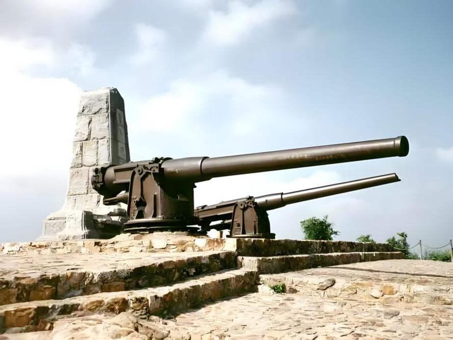

大连东鸡冠山景区，占地面积约931万平方米，是1904年日俄战争旅顺陆战东部防线的重要战场。景区保存了完整的战争遗址，被誉为“露天历史博物馆”，是集自然风光与爱国主义教育于一体的国家级风景名胜区。
景区遗迹始于沙俄1898年强租旅顺后修建的东部防线，日俄战争期间成为双方争夺焦点。战后日军立碑炫耀“战功”，1980年代起逐步开放为爱国主义教育基地。
东鸡冠山景区包括东鸡冠山北堡垒、日俄战争陈列馆、望台炮台和二龙山堡垒四个景点。东鸡冠山北堡垒是沙俄1898年3月侵占旅顺后修建的东部防线中一座重要的功守兼备的堡垒，也是日俄战争中双方争夺的重要战场之一；望台炮台是日俄争夺旅顺的最后战场，因遗留山上的两门俄军残炮，被当地人称为“两杆炮”。二龙山堡垒是清政府于甲午战争前所建，先后经历了甲午中日战争与日俄战争的炮火。
 ← 返回大连地图